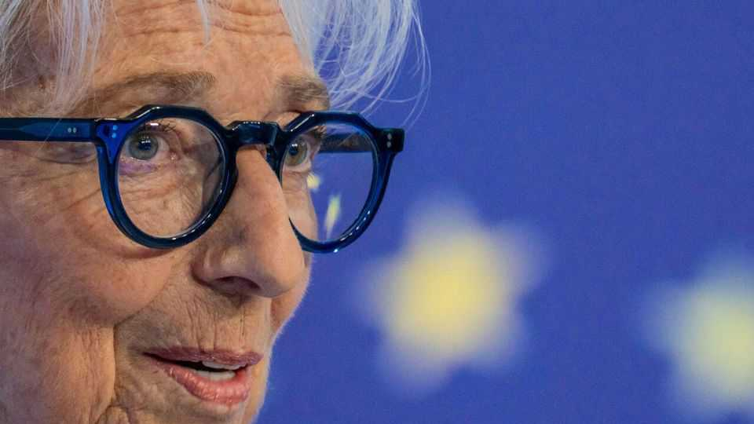
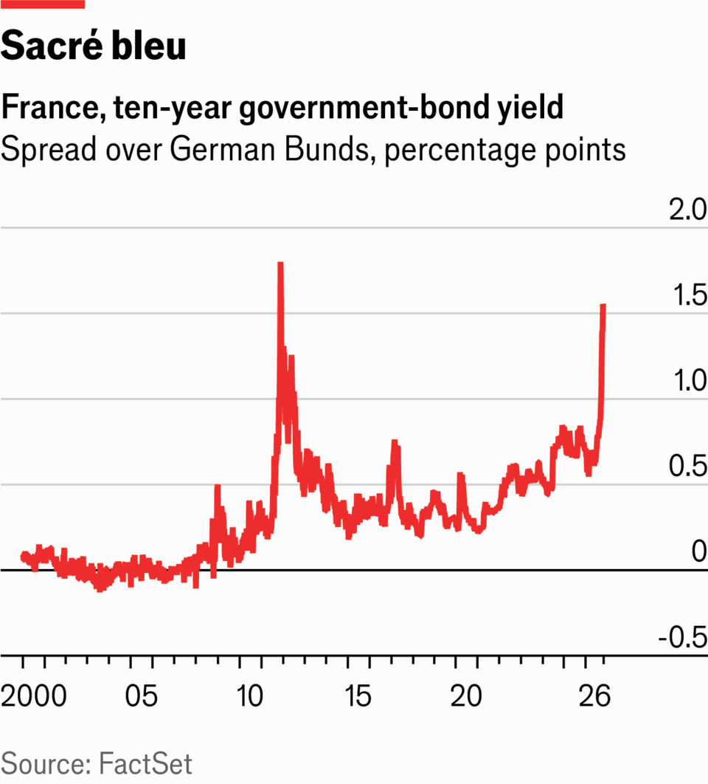

Christine Lagarde departs at a moment of peril
Her successor as ECB chief will have an unenviable job

Oct 29th 2026
It’s official: Christine Lagarde is leaving the European Central Bank. Madame la présidente is likely to become the new boss of the World Economic Forum in Geneva and thus host of the great annual Davos gabfest. The 70-year-old former managing director of the IMF steered the ECB through the covid-19 pandemic and the inflationary shocks that followed.

She will depart in February, nine months ahead of schedule, at a moment of jeopardy. Her home country, France—where she was once finance minister—is going fiscally rogue. Failure to sort out credible budget plans has sent its bond yields soaring. The spread over the German benchmark is now as high as it was during the worst of the euro-zone crisis in the early 2010s (see chart). Marine Le Pen, a right-wing populist who once called for the single currency’s abolition, may next year enter the Élysée Palace. Ms Lagarde’s successor will have an unenviable task: persuading France to cut spending.
Her tenure began in more innocent times. In 2019 the euro crisis was well behind the bank, and government debts were falling fast. The ECB’s main problem was working out how to get inflation—then just above 1%—to the target of 2%. It was hardly a crisis. So policymakers sought other jobs, such as making central banking more environmentally friendly.
The idyll did not last. Three successive tests battered the ECB soon after Ms Lagarde took over. The first came a few months into her tenure, when covid reached Europe. Investors rushed to safety, which in Europe meant German debt rather than that of the periphery. At first, Ms Lagarde argued the ECB was “not here to close spreads”. Markets did not take the suggestion well.
She was caught in the perennial vice facing European policymakers. Soaring spreads can mess with the ECB’s ability to run monetary policy: what good does a cut to the bank’s policy rate do if a country’s actual borrowing costs rise by far more? Yet market discipline is also what stops politicians from borrowing heedlessly and dumping their problems at the ECB’s door. Ultimately, the danger of a fiscal crisis on top of a pandemic was too much to bear. Ms Lagarde set up a large bond-buying programme. The ECB had become the bloc’s crisis lender of not-quite-last resort.
Her second test was inflation. Pandemic stimulus, supply disruptions and the energy shock caused by Russia’s invasion of Ukraine ultimately pushed euro-zone inflation above 10% in 2022. At first, Ms Lagarde was reluctant to raise interest rates. Like many other central banks, the ECB hoped the surge might prove transitory. It waited longer than most before acting. After wages started climbing and inflation broadened across the economy, the bank was forced to raise rates by 4.5 percentage points between July 2022 and September 2023. Inflation returned to around 2% by late 2024.
Europe is still reckoning with the third test: hefty debts. Interest rates started rising in 2022, putting pressure on the most indebted countries. In July that year Italian borrowing costs began to rise much faster than German ones, prompting Ms Lagarde to devise a new “transmission-protection instrument” to keep spreads contained. There was a clear case for stepping in during the pandemic. But was the repricing really so disorderly this time? Markets did not seem unduly alarmed. Investors learned that the ECB would intervene to manage bond disorder—so long as countries stuck to some basic rules of prudent macroeconomic management.
And what about countries that do not? That is the question that will bedevil Ms Lagarde’s successor. The French presidential election, in April and May 2027, is unlikely to bring much clarity. Ms Le Pen has suggested spending cuts to bring down debt, but her ideas are thin and her party would command no majority to pass legislation, much like the current minority government. Even if a centrist wins, the odds of progress do not look much better. As French spreads continue to climb, the ECB must prepare for a stand-off with its second-biggest member.
The appointment of Ms Lagarde’s successor will be a highly political affair. In quintessential European fashion, that means haggling over several jobs at once. The ECB’s six-strong board will need three new members by the end of next year. So far, a Dutchman, two French nationals and an Italian have steered the euro through its first quarter of a century. It is arguably Germany’s turn to lead the bank. The problem is that Ursula von der Leyen, head of the European Commission, is herself German and her term runs until 2029.
Thus the two main contenders are from elsewhere: Pablo Hernández de Cos, the Spanish head of the Bank for International Settlements, a club for central banks, and Klaas Knot, a former governor of the Dutch central bank.
Mr Hernández de Cos may be attractive to German officials. They could try to persuade France he is a soft-money dove, which would then necessitate a German becoming the bank’s chief economist so as to strike a balance between southern tolerance for higher inflation and teutonic firmness when governments come begging for lower rates. Such a line-up would also give Spain—economically strong and in good fiscal shape—an overdue turn running the bank.
But the French are not so easily fooled. Mr Hernández de Cos is not really a dove. And they have accepted that the next boss will have to be in a more German mould. To them, Mr Knot, the Dutchman, is acceptable—provided the chief economist is French. Their main contenders for that job are also women. That matters, because Ms Lagarde and Isabel Schnabel, the only two women on the executive board, are both leaving and, embarrassingly, all 21 national central-bank governors on the monetary-policy council are men.
So German policymakers may return to the remit of the ECB’s new boss. Top of the list is to explain to politicians in Paris that high interest rates on French debt are of their own making, and that fiscal measures will be needed first, to restore trust, before any help arrives from the central bankers. Such a message, Germany may well conclude, would sound best in blunt, phlegmatic Dutch. ■